| 日付 | 2010年7月4日（日） - 2010年7月11日（日） |
|---|---|
| メンバー | 単独 |
30歳になり、会社からリフレッシュ休暇をもらう。
仕事の都合が許せば、好きな時期に1週間休みを取ることができる。
時期は梅雨時、場所は山岳リゾートと決め、
ヨーロッパアルプスかカナディアンロッキーかどちらにしようか迷っていたが、
前回の旅行はヨーロッパだったので、今回はより景色が雄大な
カナディアンロッキーに行ってみることにする。
1度くらいロングトレイルもしてみたいと思い、テントを持っていく。
1日目
バンクーバー空港に到着。大きな青銅彫刻が置かれている。
ここからカルガリーまで国内線に乗り継ぎだ。
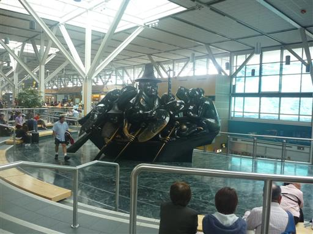
カルガリーへはカナディアンロッキーを横断する。天気は曇。
雲の隙間からは山々がわずかに見える。
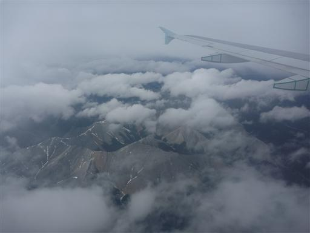
バンクーバーからバンフまでは車で2時間。運転手は日本人のシンジさん。
空港のカウンターにいたのもこの人で、日本語が通じて大いに助かった。
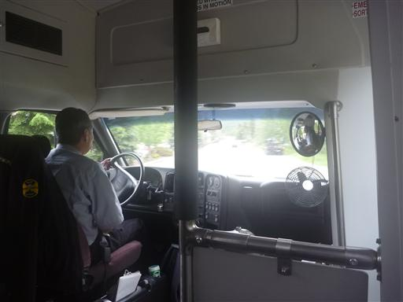
車はハイウェイを飛ばしていく。遠くに見える山々がどんどん近づいてくる。
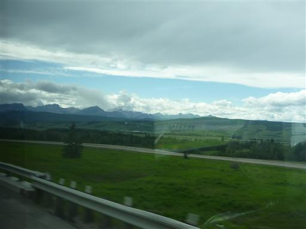
カナディアンロッキーの中にある町、バンフで次々と乗客は降りていく。
バンフの町から少し離れたところにある、キャンプ場に比較的近い場所で降ろしてもらう。
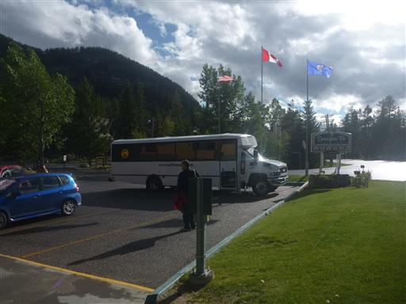
今回宿泊予定のトンネルキャンプグラウンド1の場所は良く分かっていない。
とりあえず、キャンプ場の方角めざして、とぼとぼ歩いていく。
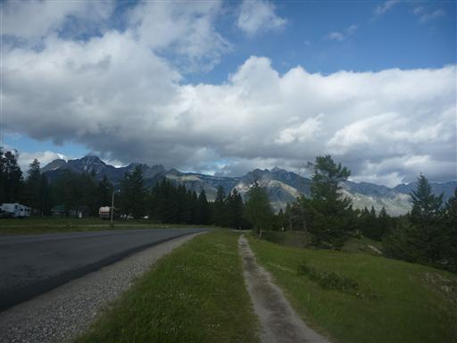
右手に見えるのはマウント・ランドル。これから何度も目にする山だ。
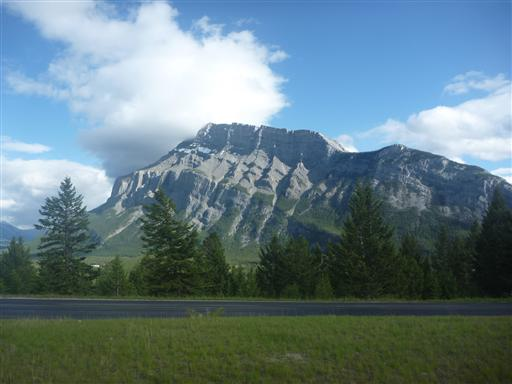
1kmほど歩いてキャンプ場に到着。たくさんのキャンピングカーが停まっている。
ここはキャンプグラウンド2で、キャンプグラウンド1はここからさらに2km先だと教えられる。
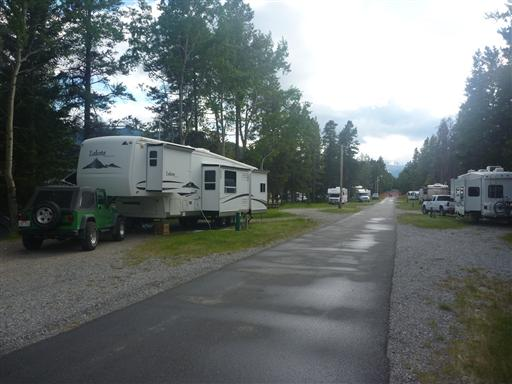
ようやくキャンプグラウンド1に到着、テントを張る。
ここには食料もなければ水もない。時刻は20時前。とりあえずバンフの町に行くことにする。

キャンプ場付近からの眺め。眼下に流れるのはボウ川だ。
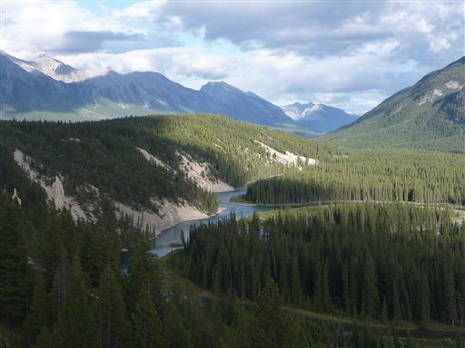
広い車道に沿って遊歩道が設けられている。
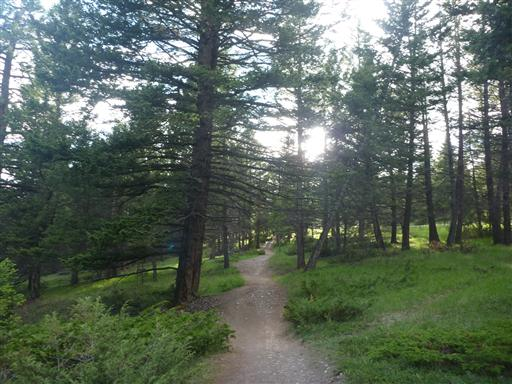
道端には様々な花が咲いている。
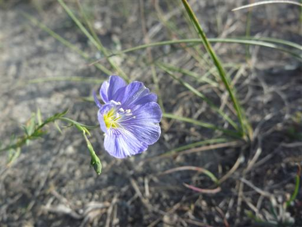
インディアン・ペイントブラシ。日本では見かけない形の花だ。
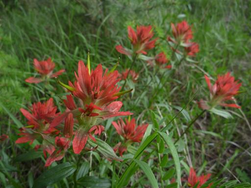
ボウ川のほとりに下りてみる。梓川と違って水の流れは穏やかだ。
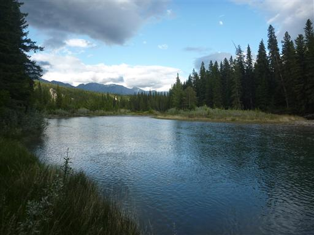
バンフの町までは遠いので、バスに乗っていく。
最寄のバス停はキャンプグラウンド2で、そこからバスで10分程度だ。
この徒歩2km+バス10分を、これから何往復もすることになる。
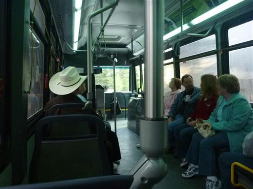
バスを停める合図はボタンではなく、紐を引っ張る方式。
窓は網目状になっていて、外の美しい景色はほとんど見ることができない。
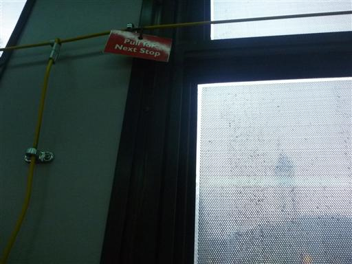
バンフの町にやってくる。ここはメインストリートだ。
青空が見えているが雨は降ったり止んだりで、天気がいいのか悪いのか良く分からない。
カナダは極北に近いので日が長く、22時前だというのにまだ明るい。
もう観光は無理なので、夕食をとり買物をしてテントに戻る。
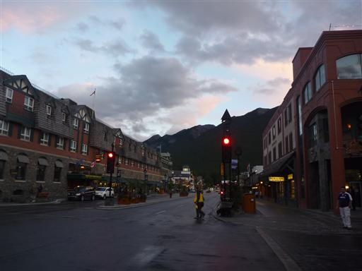